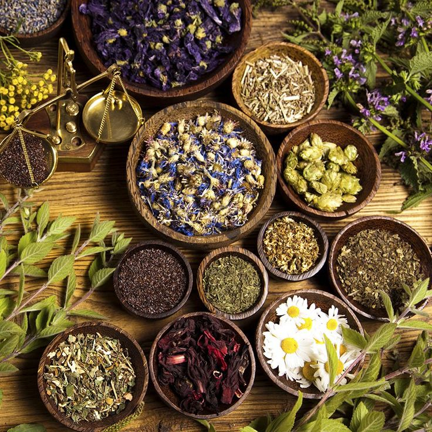
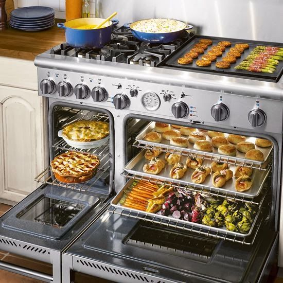
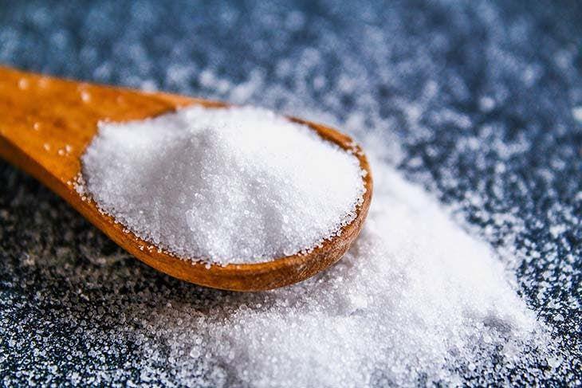

Tips de Cocina
Cocinar no tiene por qué ser difícil. Con estos consejos prácticos ahorrarás tiempo, evitarás errores comunes y mejorarás tus resultados en la cocina. ¡Descubre nuestros mejores trucos y conviértete en un chef en casa!

Conservación de hierbas frescas
Guarda cilantro o perejil en un vaso con agua en la nevera o congélalos picados con aceite en cubetas para mantenerlos frescos por más tiempo.

Uso eficiente del horno
Evita desperdiciar energía cocinando varios platos al mismo tiempo. Por ejemplo, puedes hornear pandebonos mientras asas plátanos o verduras.

Reducir el exceso de sal
¿La sopa quedó salada? Añade una papa cruda pelada y cocínala con la preparación. Absorberá parte de la sal sin alterar el sabor.